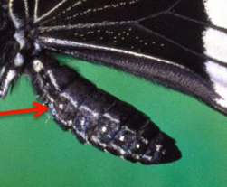

El abdomen de la mariposa alberga los órganos vitales para la digestión, excreción y reproducción. Contiene el sistema digestivo, donde se procesan los nutrientes del néctar, y los órganos reproductores. Además, los espiráculos, pequeños orificios laterales, permiten la respiración.
En resumen, el abdomen de la mariposa es esencial para su funcionamiento interno y su capacidad de reproducirse y sobrevivir.